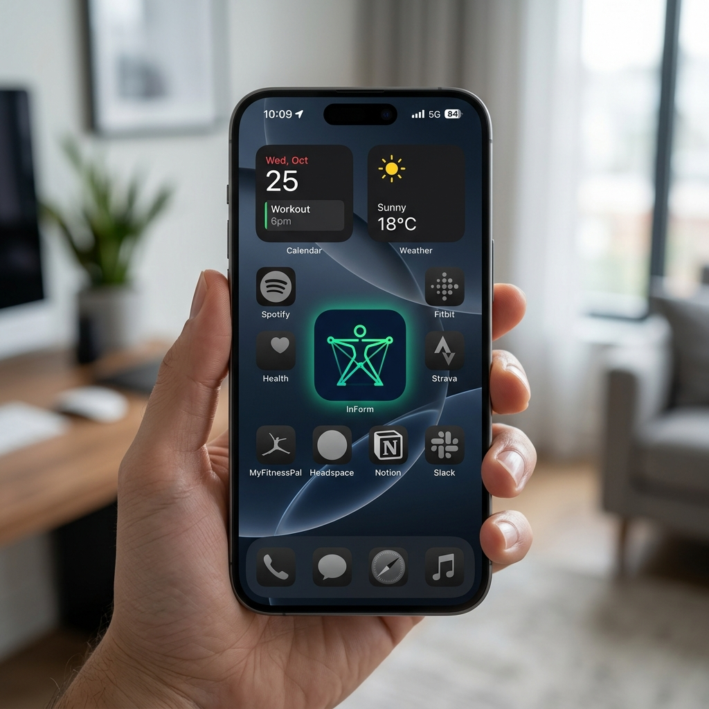
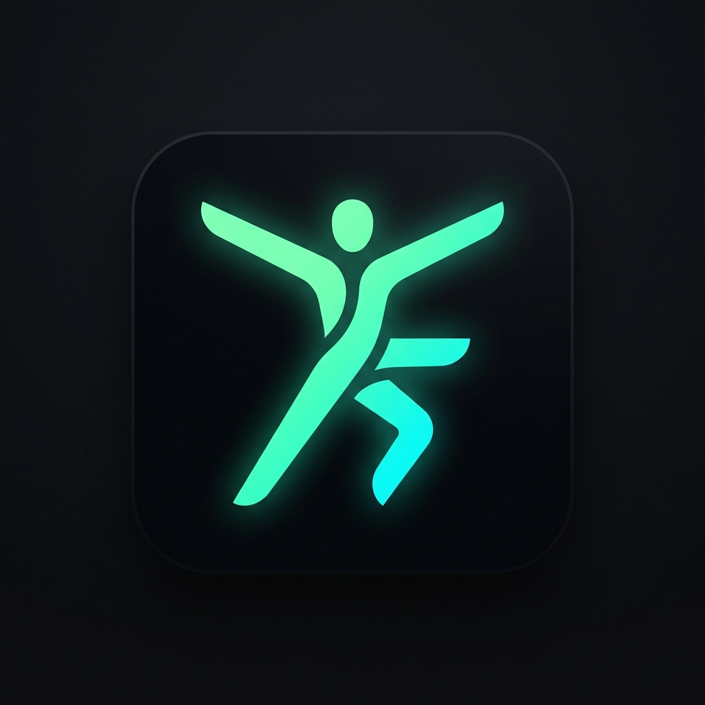
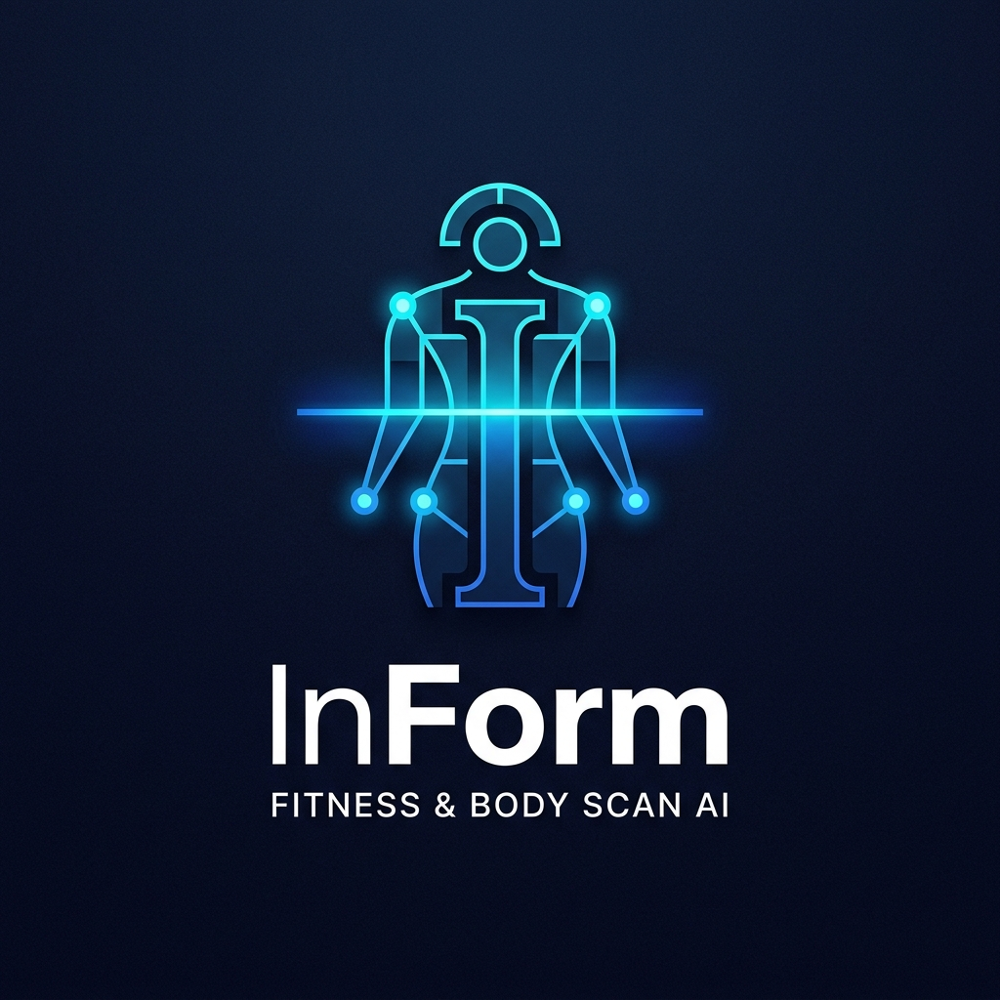
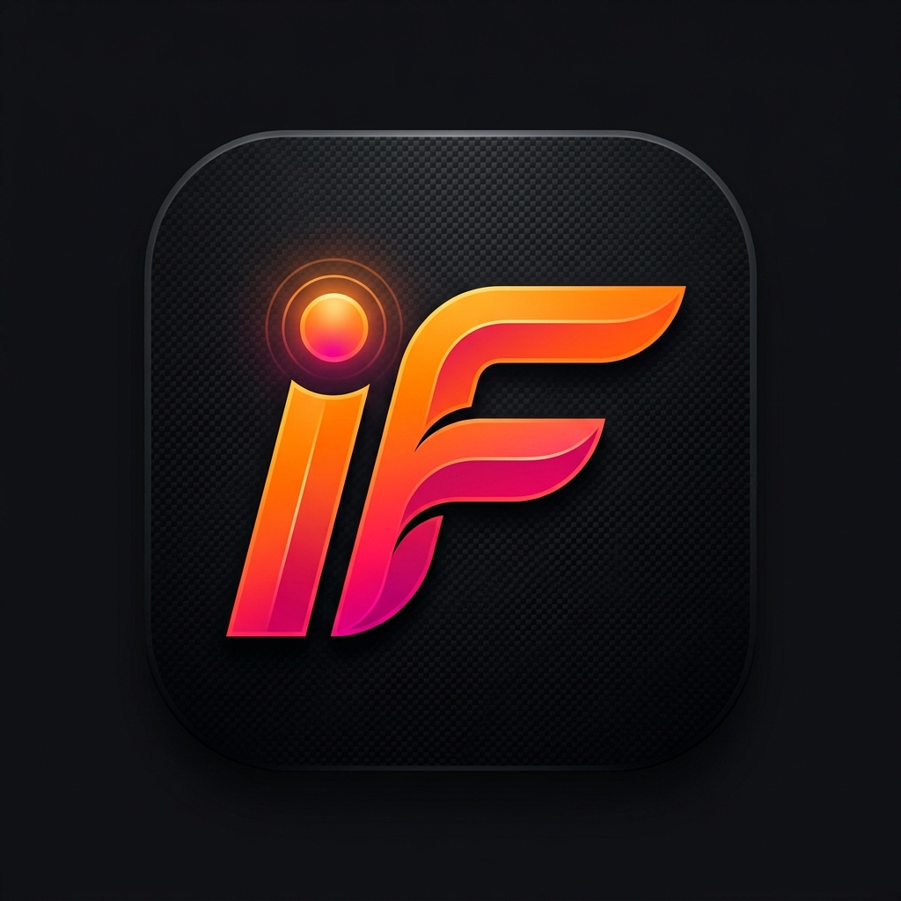
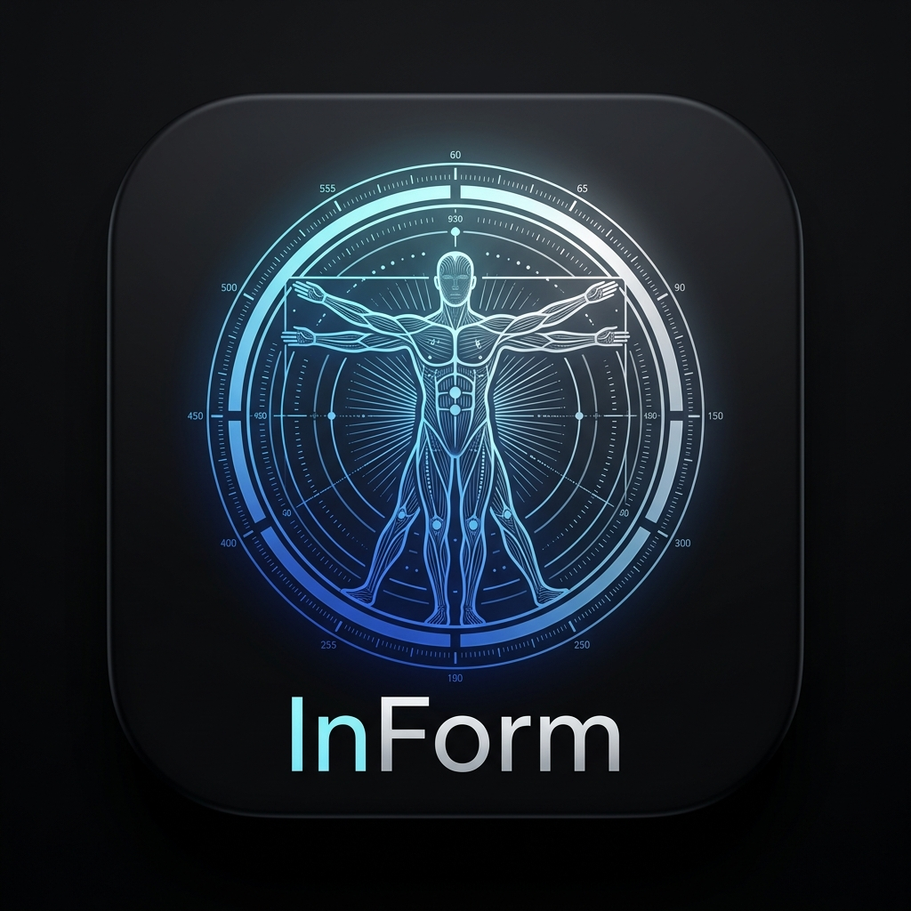
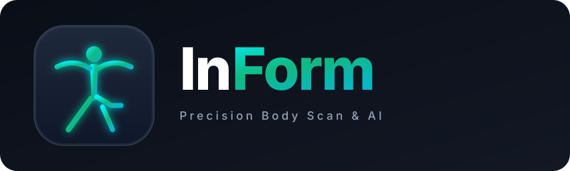
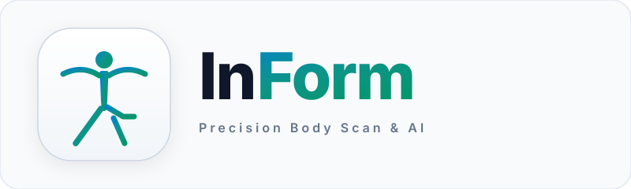
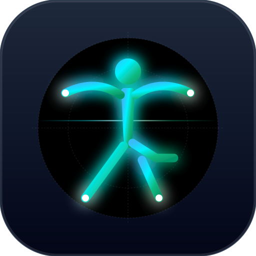

Visual identity options engineered for the InBody AI Fitness Assistant. Designed to express auditable deterministic science, segmental body analysis, and peak human vitality.

The app icon is evaluated in a real iOS environment next to Spotify, Strava, and Apple Health. The high-contrast bioluminescent emerald and cyan mark cuts through dark wallpapers with immediate recognition at 60×60 points.

5 interconnected organic segments (representing arms, trunk, and legs) forming both an athletic human in motion and the subtle letter 'F'. Bioluminescent mint-to-cyan gradient on obsidian.

A stylized geometric letter 'I' fused with a glowing OCR laser scanline and bilateral balance calibration nodes. Emphasizes clinical precision and machine data extraction.

High-performance athletic energy. Bold geometric monogram combining 'i' and 'F' with an illuminated biometric sensor focal dot and aerodynamic wing strokes in solar orange and crimson.

Direct homage to Da Vinci's Vitruvian Man and modern InBody medical calibration matrices. Symmetrical human form enclosed by biometric telemetry dials and measurement arcs.

Full brand lockup with logomark, custom typography, and tagline for dark UI environments.

High-contrast slate and teal lockup calibrated for white documents, PDF export, and light mode.

128px (Desktop / App Store)